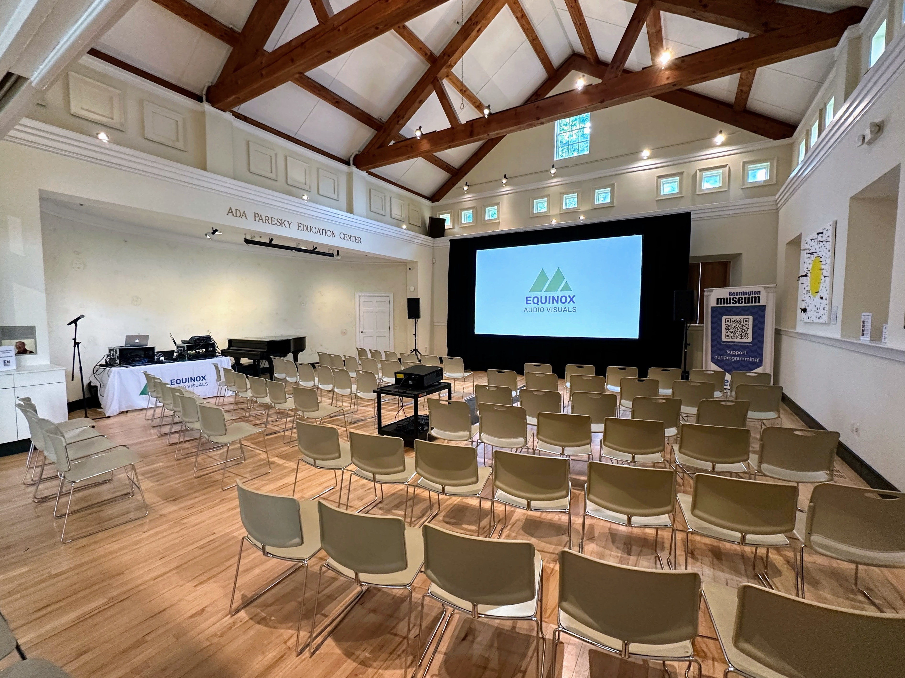
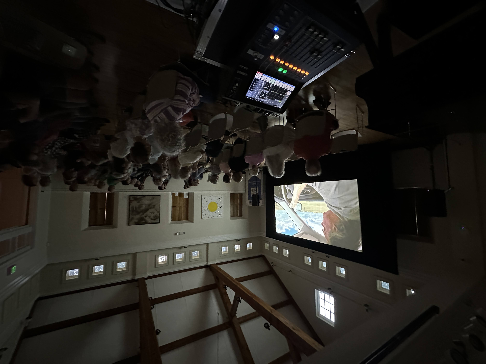

A documentary about disappearing barns. A historic museum. One night to make it feel like a theater.
The Bennington Museum hosted “Vanish,” a documentary about Vermont’s disappearing historic barns. The film required proper cinematic treatment in the museum’s education center — a space designed for collections, not projection. Our job was to make it feel like a theater without touching the room’s character.
We installed a large-format cinema screen and a high-lumen laser projector calibrated to the room’s ambient light conditions and seating geometry. Every seat had a clear sightline and a consistent image. The audio system was designed for the film’s score and narration: present enough to be immersive, controlled enough that it didn’t overwhelm a space built for quiet contemplation. Speaker placement kept the sound image clean and forward-facing throughout the room.
The setup was engineered to be invisible in the historic space. No road cases in view, cables run tight to the walls, equipment positioned so the room remained the frame for the film rather than a backdrop for the gear. When the lights came down and the projector cued, the audience was watching a documentary. Not a production.
After the screening, director Jim Westphalen spoke. We had a microphone at the podium and a second at the front of the house for audience questions. The transition from playback to live sound was seamless. The Q&A ran forty minutes. A room full of Vermonters with opinions about old barns. The audio held through all of it.


“Equinox provided a flawless cinematic experience for our film screening. Their team was professional, efficient, and delivered a presentation that exceeded all our expectations.”